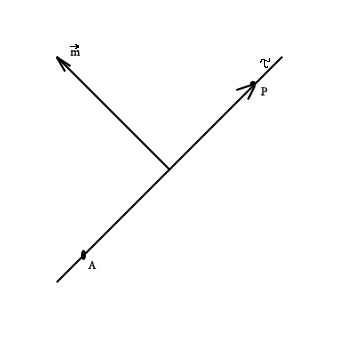
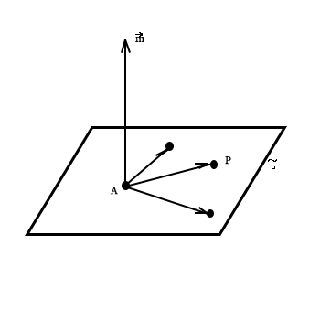
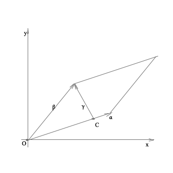
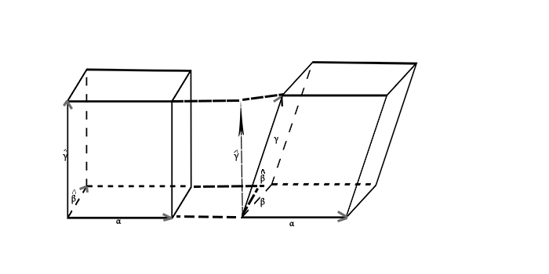

`z_1 z_2 = r_1 r_2 (cos (phi_1 + phi_2) + i sin (phi_1 + phi_2))`
`z_1 / z_2 = r_1 / r_2 (cos (phi_1 - phi_2) + i sin (phi_1 - phi_2))`
9. Lineaarne võrrandisüsteem, selle lahend ja maatrikskuju.
Lineaarne võrrand, tema lahend.
Näide. `2x_1 - x_2 + 4x_3 = 6`; selle võrrandi lahendeid:
`x_2 = x_3 = 0, x_1 = 3` ehk `xi = (3; 0; 0)`,
`x_1 = 1, x_2 = -1, x_3 = 1/2` ehk `xi = (1; -1; 1/2)`,
kõigi lahendite hulk on
`L = {((6 + c_1 - 4 c_2)/2; c_1; c_2) | c_1, c_2 in RR}`,
TO BE CONTINUDED
10. Gaussi meetod.
Gaussi meetodi idee
Gaussi meetod on lineaarvõrrandsüsteemide ökonoomne lahendusmeetod
elementaarteinsenduste abil. Meetodi aluseks on tähelepanek, et
LVS-i elementaarteisendusi võib sooritada maatriksesituses,
kasutades LVS-i laiendatud maatriksi (peamiselt ridade)
elementaarteisendusi. LVS teisendatakse elementaarteisenduste
abil ekvivalentsle treppkujule. Meetod võimaldab:
- Leida LVS-i maatriksi ja tema laiendatud maatriksi astakud
- Kontrollida astakutingimust (kooskõlalisust)
- Selekteerida välja vabad tundmatud
- Kooskõlalisuse korral leida LVS-i kõik lahendid, olemasolu korral üldlahend
Gaussi meetodil LVS-i lahendamine
- Kirjutame välja LVS-i laiendatud maatriksi, eraldades vabaliikmete veeru.
- Teisendame maatriksi ekvivalentsele treppkujule.
- Selekteerime tundmatud põhitundmatuteks ja vabadeks tundmatuteks.
- Avaldame põhitundmatud vabaliikmete ja vabade tundmatute kaudu.
- Kirjutame välja üldlahendi, näidates ära vabad tundmatud.
11. Võrrandisüsteemi Ax = b pseudolahend. Pseudolahendite seos tavaliste
lahenditega.
Vaatleme suvalist võrrandsüsteemi
`Ax = b`
See võib olla lahenduv või mittelahenduv. Moodustame uue lineaarvõrrandsüsteemi
`A^T Ax = A^T b`
Uus lineaarvõrrandsüsteem `A^T Ax = A^T b` omab alati lahendit.
Kui esialgne võrrandsüsteem `Ax = b` on lahenduv, siis on esialgsel ja
uuel süsteemil samad lahendid.
Definitsioon
Süsteemi `A^T Ax = A^T b` lahendit nimetatakse võrrandisüsteemi `Ax = b`
pseudolahendiks (ehk lahendiks vähimruutude mõttes).
Pseudolahendi korral on avaldisel
`|| Ax - b || = sqrt(sum_(i=1)^m (sum_(j=1)^n a_(ij) x_j - b_i )^2)`
vähim väärtus.
12. Substitutsioon. Inversioon, inversioonide arv substitutsioonis.
Definitsioon
n-ndat järku substitutsioon on
n esimese naturaalarvu
`1, 2, ..., n` kõikvõimalikud ümberjärjestused `i_1, i_2, ..., i_n`.
Näiteks kolmandat järku substitutsioone, mida on `3!` tükki:
`1, 2, 3`; `1, 3, 2`; `2, 1, 3`;
`2, 3, 1`; `3, 2, 1`; `3, 2, 1`;
Definitsioon
Olgu substitutsioonist `i_1, i_2, ..., i_n` valitud kaks arvu `i_k` ja `i_l`
selles järjekorras, nagu nad seal esinevad, st `k < l` ehk `i_1, ..., i_k, ..., i_l, ..., i_n`.
Kui `i_k > i_l` siis öeldakse, et paar `i_k, i_l` moodustab inversiooni vaadeldavas substitutsioonis.
Näiteks neljandat järku substitutsioonis `4, 1, 3, 2` saab moodustada arvupaarid `(i_k; i_l)`
, mida on
`(n!) / (m!(n - m)!) = (4!) / (2!(4-2)!) = 24/4 = 6`
`4, 1`; `4, 3`: `4, 2`; `1, 3`; `1, 2`; `3, 2`
Neist inversiooni moodustavad ainult paarid, milles arvud on kahanemisjärjekorras, ehk:
`4, 1`; `4, 3`: `4, 2`; `3, 2`
Kõikide inversioonide arvu substitutsioonis `i_1, i_2, ..., i_n` tähistatakse `sigma(i_1, i_2, ..., i_n)`.
Substitutsioonis `4, 1, 3, 2` on inversioonide arv `sigma(4, 1, 3, 2) = 4`.
13. n-ndat järku determinandi definitsioon. Teist ja kolmandat järku determinant.
Maatriksi determindandiks nimetatakse summat
`sum_((i_1, i_2, ..., i_3) in S_n)^() (-1)^(sigma(i_1, i_2,..., i_n)) a_(1i_1) a_(2i_2) ... a_(ni_n)`
kus iga n-ndat järku substitutsiooni `(i_1, i_2, ..., i_3)` jaoks on üks liidetav
`(-1)^(sigma(i_1, i_2,..., i_n)) a_(1i_1) a_(2i_2) ... a_(ni_n)`
Summat tähistatakse veel
`detA = |A| = |[a_(11), a_(12), ..., a_(1n)],
[a_(21), a_(22), ..., a_(2n)],
[vdots, vdots, ddots, vdots],
[a_(n1), a_(n2), ..., a_(n n)]|`
ja seda nimetatakse ka n-dat järku determinandiks.
Teist järku determinant:
`|[a_(11), a_(12)],
[a_(21), a_(22)]| = sum_((i_1, i_2) in S_2)^() (-1)^(sigma(i_1, i_2)) a_(1i_1)a_(2i_2) = (-1)^(sigma(1, 2)) a_(11)a_(22) + (-1)^(sigma(2, 1))a_(12)a_(21)
= a_(11)a_(22) - a_(12)a_(21)`
Kolmandat järku determinant
`|[a_(11), a_(12), a_(13)],
[a_(21), a_(22), a_(23)],
[a_(31), a_(32), a_(33)]| = sum_((i_1, i_2, i_3) in S_3)^() (-1)^(sigma(i_1, i_2, i_3)) a_(1i_1) a_(2i_2) a_(3i_3) = `
`= (-1)^(sigma(1,2,3)) a_(11)a_(22)a_(33) + (-1)^(sigma(1,3,2)) a_(11)a_(23)a_(32) + `
`+ (-1)^(sigma(2,1,3)) a_(12)a_(21)a_(33) + (-1)^(sigma(2,3,1)) a_(12)a_(23)a_(31) + `
`+ (-1)^(sigma(3,1,2)) a_(13)a_(21)a_(32) + (-1)^(sigma(3,2,1)) a_(13)a_(22)a_(31) = `
`= a_(11)a_(22)a_(33) - a_(11)a_(23)a_(32) - a_(12)a_(21)a_(33) + `
`+ a_(12)a_(23)a_(31) - a_(13)a_(21)a_(32) - a_(13)a_(22)a_(31)`
14. Crameri valemid ja nende tõestus juhul n = 2.
Lineaarse võrrandisüsteemi
`{(a_(11)x_1 + a_(12)x_2 +...+a_(1n)x_n = b_1),
(a_(21)x_1 + a_(22)x_2 +...+a_(2n)x_n = b_2),
(...),
(a_(m1)x_1 + a_(m2)x_2 +...+a_(mn)x_n = b_m):}`
lahendid saab leida Crameri valemitega, kui
1) tundmatute arv võrdub võrrandite arvugu(ehk peamaatriks A peab olema ruutmaatriks)
2) süsteemi peamaatriksi A determinant `det(a) != 0`.
Võrrandisüsteemi lahend avaldub valemiga
`x_i = |A_i|/|A|,i=1,2..n`,
kus `A_i` on maatriks, mis on saadud maatriksist A i-nda veeru asendamisel võrrandisüsteemi vabaliikmete veeruga.
Juhul n=2 ehk võrrandisüsteemist
`{(a_(11)x_1 + a_(12)x_2= b_1),
(a_(21)x_1 + a_(22)x_2= b_2):}`
tundmatu `x_1` leidmiseks lahutatakse arvu `a_(22)` kordsest esimesest võrrandist arvu `a_(12)` kordne teine võrrand ja saadakse
`(a_(11)a_(22) -a_(12)a_(21) )x_1 = b_(1)a_(22) - b_(2)a_(12)`
ning juhul `a_(11)a_(22) -a_(12)a_(21) != 0`
`x_1 = (b_(1)a_(22) - b_(2)a_(12))/(a_(11)a_(22) -a_(12)a_(21))`
Tundmatu `x_2` leidmiseks tehakse analoogselt ja saadakse
`x_2 = (b_(2)a_(11) - b_(1)a_(21))/(a_(11)a_(22) -a_(12)a_(21))`
Murdude lugejas ja nimetajas on teist järku determinandid
`D= |[a_(11), a_(12)],
[a_(21), a_(22)]|
= a_(11)a_(22) -a_(12)a_(21)`
`D_1= |[b_(1), a_(12)],
[b_(2), a_(22)]|
= b_(1)a_(22) -b_(2)a_(12)`
`D_2= |[a_(11), b_(1)],
[a_(21), b_(2)]|
= b_(2)a_(11) -b_(1)a_(21)`
Seega võrrandisüsteemi lahend on
`x_1 = D_1/D`
`x_2 = D_2/D`
Sellega ongi Crameri valemid juhul n=2 tõestatud.
15. Determinantide omadused (tõestusteta).
Omadus 1
Maatriksite `A` ja `A^T` determinantide väärtused langevad kokku, st determinandi `D` väärtus ei muutu, kui tema read paigutada vastavateks veergudeks ja vastupidi:
`A = |[a_(11), a_(12), ..., a_(1n)],
[a_(21), a_(22), ..., a_(2n)],
[vdots, vdots, ddots, vdots],
[a_(n1), a_(n2), ..., a_(n n)]|`
` = |[a_(11), a_(21), ..., a_(n1)],
[a_(12), a_(22), ..., a_(n2)],
[vdots, vdots, ddots, vdots],
[a_(1n), a_(2n), ..., a_(n n)]|`
Omadus 2
Kui determinandil D = det A vahetada omavahel kaks rida (või veergu), siis saadud determinandi väärtus on -D
Omadus 3
Kui determinandis kaks rida langevad omavahel kokku, siis selle determinandi väärtus võrdub nulliga
Omadus 4
Determinandi mis tahes rea arvudest võib ühise teguri tuua tegurina determinandi märgi ette.
Omadus 5
Kui determinandi `D` mingi rea, näiteks K-nda rea arvud `a_(k1) ,a_(k2) ,...,a_(kn)` avalduvad kahe liidetava summana `a_(k1) = b1 + c1, a_(k2) = b2+c2, ... , a_(kn) = b_n+c_n`, siis determinant `D` avaldub kahe determinandi summana
`D = |[a_(11), ..., a_(1n)],
[vdots, ddots, vdots],
[a_(k1), ..., a_(kn)],
[vdots, ddots, vdots],
[a_(n1),..., a_(n n)]|`
` = |[a_(11), ..., a_(1n)],
[vdots, ddots, vdots],
[b1 + c1, ..., b_n + c_n],
[vdots, ddots, vdots],
[a_(n1),..., a_(n n)]|`
` = |[a_(11), ..., a_(1n)],
[vdots, ddots, vdots],
[b1, ..., b_n],
[vdots, ddots, vdots],
[a_(n1),..., a_(n n)]|`
` = |[a_(11), ..., a_(1n)],
[vdots, ddots, vdots],
[c1, ...,c_n],
[vdots, ddots, vdots],
[a_(n1),..., a_(n n)]|`
(kõik avaldises esinevad determinandid erinevad ainult k-nda rea poolest). Analoogiline väide kehtib ka determinandi D veergude jaoks.
Omadus 6
Determinandi väärtus ei muutu, kui tema mingi rea arvudele liita mingi arvu kordsed teise rea arvud. Analoogiline väide kehtib ka determinandi veergude jaoks.
Omadus 7
Determinandi D mis tahes reanumbri i korral kehtib
`D = sum_(j=1)^n a_(ij) A_(ij) = a_(i1) A_(i1) + a_(i2) A_(i2) + ... + a_(i n) A_(i n)`
(arendis i-nda rea järgi) ja mis tahes veerunumbri j korral kehtib
`D = sum_(i=1)^n a_(ij) A_(ij) = a_(1j) A_(1j) + a_(2j) A_(2j) + ... + a_(nj) A_(nj)`
(arendis j-nda veeru järgi), kus
`A_(ij) = (-1)^(i+j) M_(ij)`
ja `M_(ij)` on determinant, mis tekib determinandist `D` i-nda rea ja j-nda veeru kõrvaldamisel.
Omadus 8
Kui determinandi mingis reas või veerus on kõik arvud nullid, siis determinandi väärtus võrdub nulliga.
Omadus 9
Ruutmaatriksi `A=||a_(ij)||in R^(nxn)` determinandi `|A| = D` mis tahes reanumbrite i ja k korral kehtib võrdus
`a_(i1)A_(k1) + a_(i2)A_(k2) + ... + a_(i n)A_(kn) = sum_(j=1)^n a_(ij) A_(kj) = {(D, text(kui ) i=k,),(0, text(kui ) i!=k,):}`
kus `A_(kj)` on determinandi D elemendi `a_(kj)` alamdeterminant. Analoogiliselt mis tahes veerunumbrite j ja k korral
`a_(1j)A_(1k) + a_(2j)A_(2k) + ... + a_(nj)A_(nk) = sum_(i=1)^n a_(ij) A_(ik) = {(D, text(kui ) j=k,),(0, text(kui ) j!=k,):}`
Omadus 10
Kui A ja B on ühte ja sama järku ruutmaatriksid, siis nende maatriksite korrutise AB determinant võrdub maatriksite A ja B determinantide korrutisega:
`det(AB) = det(a) * det(B)`
16. Vektorruumi definitsioon ja näiteid.
Mittetühja hulka V nimetatakse vektorruumiks, kui temas on antud kaks tehet - liitmine(igale kahele elemend `alpha + beta in V` on vastavusse pandud parajasti üks element `alpha + beta in V`)
ja skalaar korrutamine (igale arvule `alpha in R` ja hulga V elemendile `alpha` on vastavusse pandud parajasti üks element a`alpha in V` - nii, et on täidetud teoreemis 2.1 loetletud aksioomid `1^0 - 8^8`.
Vektorruumi V elemente nimetatakse vektoriteks.
Vektori `theta` aksioomist `3^0` nimetatakse nullvektoriks. Nullvektoreid saab vektorruumis olla ainult üks, sest kui `theta_1` ja `theta_2` on nullvektorid,siis `theta_1 + theta_2` võrdub nii vektoriga `theta_1`, kui ka vektoriga `theta_2`, st `theta_1 = theta_2`
Aksioom `3^0` kohaselt leidub iga vektori `alpha in V` jaoks selline vektor `beta in V`, et `alpha + beta = beta + alpha = theta`. Sellist vektorit `beta` nimetatakse vektori `alpha` vastandvektoriks. Ka vektori `alpha` vastandvektoriks. Ka vektori `alpha` vastandvektor
on üheselt määratud: kui `beta_1` ja `beta_2` oleksid mõlemad vektori `alpha` vastandvektorid, siis
`beta_1 + alpha = theta, alpha + beta_2 = theta`
ja
`beta_2 = theta + beta_2 = (beta_1 + alpha) + beta_2 = beta_1 + (alpha + beta_2) = beta_1 + theta = beta_1` ehk `beta_2 = beta_1`
Iga kahe vektori `alpha` ja `beta` jaoks vektorruumist V saab V saab defineerida ka nende vektorite vahe `alpha - beta` võrdusega
`alpha - beta = alpha + (-1)beta`
Polünoomiks nimetatakse funktsiooni kujul
`f(x) = a_0 + a_1x + a_2x^2 + ... + a_nx^n = sum_(i=0)^n a_ix^î`
kus `a_0, a_1, ... , a_n in R`. Kõigi polünoomide hulka tähistatakse R[x]. Hulk R[x] on vektorruum, milles liitmine ja arvuga korrutamine toimub nii, nagu see toimub tavaliselt funktsioonidega.
17. Vektorite lineaarne kombinatsioon. Vektorite lineaarse sõltuvuse mõiste.
Vektorite lineaarse sõltumatuse tunnus. Näiteid.
Vektorite `alpha_1, ... , a_m in V` lineaarseks kombinatsiooniks nimetatakse iga vektorit kujul
`c_1 alpha_1 + c_2 alpha_2 + ... + c_m c_n`
kus `c_1, c_2, ... , c_m in R`
Seega on vektorite `alpha_1, ... , alpha_m` linaarne kombinatsioon vektor, mis on saadud nendest vektoritest lineaarsete tehete abil (nii-öelda "lineaarselt kombineerides")
Näide Olgu V kõigi geomeetriliste vektorite hulk tasandil ning `alpha` ja `beta` suvalised mittekollineaarsed vektorid ruumist V. Siis iga vektor `gamma in V`
avaldub lineaarse kombinatsioonina vektoritest `alpha` ja `beta`.
Öeldakse, et vektorid `alpha_1, ..., alpha_m in V (m > 1)` on lineaarselt sõltumatud, kui ükski nendest ei avaldu lineaarse kombinatsioonina ülejäänud m-1 vektroist.
Nullist erinevat vektorit (st juht m = 1 ülalt) nimeatakse samuti lineaarselt sõltumatuks. Vastandjuhul nimetataakse vektoreid `alpha_1, ... , alpha_m` lineaarselt sõltuvateks.
NäideIga kolm vektorit `alpha, beta, gamma` tasandil vaadeldavate geomeetriliste vektorite ruumist on lineaarelt sõltuvad. Kui `alpha` ja `beta` on parralleelsed, st `alpha = c beta`
või `beta = c alpha` (c - mingi arv), siis `alpha = c beta + 0 gamma` või `beta = c alpha + 0 gamma`. Kui aga `alpha` ja `beta` pole paralleelsed, siis `gamma` avaldub lineaarse kombinatsioonina vektorites `alpha` ja `beta`.
Öeldakse, et lõpmatu vektorite hulk B vektorruumist V (`B sub V`) on lineaarselt sõltumatute vektorite hulk, kui iga lõplik arv erinevaid vektoreid hulgast B on lineaarselt sõltumatud. Vastndjuhul
nimetatakse vektorite hulka B lineaarselt sõltuvate vektorite hulgast.
NäideOlgu `m <= n` ja vaatleme n-mõõtmelises aritmeetilises ruumis `R^n`vektoreid
`alpha_1 = (...;1;...;0;...;0;...)`
`alpha_2 = (...;0;...;1;...;0;...)`
`alpha_m = (...;0;...;0;...;1;...)`
mille esiletõstetud komponentides saab moodustada m-järku ühikmaatriksi
`E_m = [[1 , 0 , ... , 0],
[0 , 1 , ... , 0],
[vdots, vdots, ddots, vdots],
[0 , 0 , ... , 1]]`
Võrdleme võrdust:
`c_1 alpha_1 + c_2 alpha_2 + ... + c_m alpha_m =`
`= (...;1;...;0;...;0;...) + `
`+ (...;0;...;1;...;0;...) + `
`+ (...;0;...;0;...;1;...) = `
`+ (...;c_1;...;c_2;...;c_m;...) = `
`= (0;0;...;0)`
kust järelduvadki võrdused `c_1 = c_2 = ... = c_m = 0`. Järelikult on vektorid ´alpha_1, ..., alpha_m´ lineaarselt sõltumatud.
18. Vektorruumi baasi definitsioon. Kanoonilised baasid tuntud vektorruumides.
Baaside omadusi.
Mittetühja vektorite hulka B, `B sub V`, nimetatakse vektorruumi V baasiks, kui K0 vektorite hulk B on lineaarselt sõltumatute vektorite hulk,
K2 iga vektor `xi` vektorruumist V avaldub lineaarse kombinatsioonina hulka B kuuluvatest vekotritest, st leiduvad sellised vektorid `epsilon_1, ..., epsilon_n in B`
ja arvud `x_1, ... , x_n in R`, et
`xi = x_1 epsilon_1 + x_2 epsilon_2 + ... + x_n epsilon_n`
Tavaliselt valitakse vektorruumi paljude baaside hulgast välja üks baas B, mis enamasti tekib loomulikul viisil.
Sellist kokkuleppeliselt välja valitud baasi nimetatakse vaadeldava vektorruumi loomulikuks ehk kanooniliseks baasiks.
Omadused:
1) Vektorruumi V erinevad baasid sisaldavad ühe ja sama palju vektoreid. Vektorite arvu vektoruumi V mis tahes baasis nimetatakse vektorruumi V mõõtmeteks ehk dimensiooniks ja seda tähistatakse dimV
2) n-mõõtmelises vektorruumis iga n lineaarselt sõltumatut vektorit moodustavad selle ruumi baasi.
3) Vektorruumis V iga lineaarselt sõltumatute vektorite hulk on täiendatav selle vektorruumi baasiks.
19. Vektori koordinaadid. Tehted koordinaatkujul antud vektoritega. nmõõtmelise
vektorruumi isomorfsus aritmeetilise ruumiga.
Vektoriga `xi` üheselt määratud arve `x_1, ... , x_n` avaldisest `xi = x_1 epsilon_1 + x_2 epsilon_2 + ... + x_n epsilon_n` nimetatakse vektori `xi` koordinaatideks antud baasil B.
Seejuurses kasutatakse tähistust
`xi = (x_1; x_2; ... ; x_n)_B`
Kui kontekstist on selge, millist baasi B vaadeldakse, siis jäetakse B ära. Oluline on märkida, et erinevatel baasidel võivad ühe ja sama vektori koordinaadid olla erinevad.
`xi = (x_1;x_2;...;x_n)_B, eta=(y_1;y_2;...;y_n)_B`
`xi + eta = (x_1; x_2;...;x_n)_B + (y_1;y_2;...;y_n)_B =`
`= (x_1 epsilon_1 + x_2 epsilon + ... + x_n) + (y_1 epsilon_1 + y_2 epsilon_2 + ... + y_n epsilon_n) = `
`= (x_1 + y_1)epsilon_1 + (x_2 + y_2)epsilon_2 + ... + (x_n + y_n)epsilon_n =`
`= (x_1 + y_1; x_2 + y_2; ... ; x_n + y_n)_B`
`c xi = c(x_1 epsilon_1 + x_2 epsilon_2 + ... + x_n epsilon_n) =`
`= (cx_1)epsilon_1 + (cx_2)epsilon_2 + ... + (cx_n)epsilon_n = (cx_1; cx_2; ... cx_n)_B`
Saadud võrdsused näitavad, et formaalselt teostatakse lineaarseid tehteid koordinaatkujul antud vektoritega samuti nagu aritmeetilises ruumis ´R^n´, lisandunud on vaid indeks B.
Seega kkõik n-mõõtmelised vektorruumid käituvad lineaarsete tehete suhtes analoogiliselt n-mõõtmelise aritmeetilise ruumiga `R^n`, nad on piltlikult väljendades nagu ühe ja sama objekti erinevad eksemplarid.
Kui mingid objektid on matemaatiliselt samaväärsed, siis öeldakse, et nad on omavahel isomorfsed. Järelikult kõik n-mõõtmelised vektorruumid on vektorruumidena omavahel isomorfsed.
20. Miinori definitsioon. Maatriksi astaku definitsioon. Maatriksi ridade ja
veergude elementaarteisendused. Astaku leidmine.
Miinoriks nimetatakse mingist maatriksist i-nda rea ja k-nda veeru ärajätmisel saadud maatriksi determinanti. Maatriksi astakuks nimetatakse selle maatriksi nuullist erinevate miinorite kõrgeimat järku. Tähistatakse r(A) või rank(A).
Maatriksi astak näitab ka mitu lineaarselt sõltumatut reavektorit maatriksis on. Seega kui maatriksi astak
on võrdne ka reavektorite arvuga, mis jäävad alles pärast korduvaid elementaarteisendusi kuni ühtegi rida
pole võimalik enam ära kaotada.
Elementaarteisendused on:
1) süsteemi mis tahes võrrandit korrutatakse mis tahes nullist erineva arvuga
2) süsteemi mis tahes võrrandile liidetakse juurde mis tahes arvu kordne mingi teine võrrand samast süsteemist
21. Teoreem maatriksi astakust (tõestusega). Järeldusi sellest.
Teoreem
Kui maatriksi `A` astak on `k`, siis maatriksil `A` leidub `k` lineaarselt
sõltumatut reavektorit, mille lineaarse kombinatsioonina avalduvad kõik maatriksi `A`
reavektorid.
Tõestus
Olgu `(m xx n)`-maatriksi `A = || a_(ij) ||` astak `k`. Siis maatriksil `A` leidub
`k`-ndat järku nullist erinev miinor
`M = M_(i_1, ..., i_k)^(j_1, ..., j_k)
= |[a_(i_1j_1), a_(i_1j_2), ..., a_(i_1j_k)],
[a_(i_2j_1), a_(i_2j_2), ..., a_(i_2j_k)],
[vdots, vdots, ddots, vdots],
[a_(i_kj_1), a_(i_kj_2), ..., a_(i_kj_k)]| != 0`
ja tema kõik kõrgemat järku miinorid võrduvad nulliga. Tähistagu `alpha_1
,...,alpha_m` maatriksi `A` reavektoreid:
`alpha_1 = (alpha_(11); alpha_(12); ... ; alpha_(1n))`
`......`
`alpha_m = (alpha_(m1); alpha_(m2); ... ; alpha_(mn))`
Teoreemi tõestamiseks näitame, et reavektorid `alpha_(i_1), ..., alpha_(i_k)`
on lineaarselt sõltumatud ja kõik reavektorid avalduvad lineaarse kombinatsioonina
vektoritest `alpha_(i_1), ..., alpha_(i_k)`.
Üldsust kitsendamata võib eeldada, et
`i_1 = 1, i_2 = 2, ... , i_k = k`,
`j_1 = 1, j_2 = 2, ... , j_k = k`,
st
`M = M_(1, 2, ..., k)^(1, 2, ..., k)
= |[a_(11), a_(12), ..., a_(1k)],
[a_(21), a_(22), ..., a_(2k)],
[vdots, vdots, ddots, vdots],
[a_(k1), a_(k2), ..., a_(kk)]| != 0`
(vastasel juhul tuleb järgnevas tõestuses esinevad maatriksi `A` elementide reaindeksid
`1, 2, ..., k` kõikjal asendada indeksitega `i_1, i_2, ... , i_k` ja veeruindeksid
`1, 2, ..., k` asendada indeksitega `j_1, j_2, ..., j_k`; see aga teeb
tõestuse halvemini jälgitavaks.)
Veendume, et maatriksi `A` reavektorid `alpha_1, ... , alpha_k` on
lineaarselt sõltumatud. Vastuväiteliselt eeldame, et nad on lineaarselt sõltuvad, siis
üks neist, näiteks `alpha_1`, avaldub lineaarse kombinatsioonina ülejäänutest:
`alpha_1 = c_2 alpha_2 + ... + c_k alpha_k`; `c_2, ... , c_k in RR`
Siis
`M =
|[a_(11), a_(12), ..., a_(1k)],
[a_(21), a_(22), ..., a_(2k)],
[vdots, vdots, ddots, vdots],
[a_(k1), a_(k2), ..., a_(kk)]|
=
{:[-c_2 * 2. text(rida) - ... - c_k * k. text(rida)],
[],
[],
[]:}
=
|[0, 0, ..., 0],
[a_(21), a_(22), ..., a_(2k)],
[vdots, vdots, ddots, vdots],
[a_(k1), a_(k2), ..., a_(kk)]| = 0`,
mis on vastuolus eeldusega, et `M != 0`. Saadud vastuolu näitab, et vektorid `alpha_1
, ... , alpha_k` ei saa olla lineaarselt sõltuvad, st nad on lineaarselt sõltumatud.
Näitame, et kõik reavektorid `alpha_1, ... , alpha_m` avalduvad lineaarse kombinatsioonina
reavektoritest `alpha_1, ... , alpha_k`. Esimesed `k` reavektorit ilmselt avalduvad öeldud viisil:
`alpha_1 = 1 alpha_1 + 0 alpha_2 + ... + 0 alpha_k`
`alpha_2 = 0 alpha_1 + 1 alpha_2 + ... + 0 alpha_k`
`......`
`alpha_k = 0 alpha_1 + 0 alpha_2 + ... + 1 alpha_k`
Valime nüüd reavektori `alpha_l`, `l > k`, ja näitame, et ka see avaldub lineaarse
kombinatsioonina vektoritest `alpha_1, ... , alpha_k`. Selleks valime mis tahes
veeruindeksi `s`, `1 <= s <= n` ja moodustame `(k + 1)`-ndat järku determinandi
`D
= |[a_(11), ..., a_(1k), a_(1s)],
[vdots, ddots, vdots, vdots],
[a_(k1), ..., a_(kk), a_(ks)],
[a_(k1), ..., a_(lk), a_(ls)]|`.
Kui `s > k`, siis `D` on maatriksi `A (k + 1)`-ndat järku miinor ja seetõttu
`D=0` (vt astaku definitsiooni!). Kui aga `s <= k`, siis determinandi `D`
viimane veerg langeb kokku tema `s`-nda veeruga ja järelduse 5.3 põhjal samuti `D=0`
. Järelikult `D=0` iga võimaliku `s` väärtuse korral. Arendades determinanti `D` tema
viimase veeru järgi saadakse
`D = a_(1s) d_(1) + a_(2s) d_(2) + ... + a_(ks) d_k + a_(ls) M = 0`,
kus `d_1, ... , d_k` on mingid arvud, mis on ühed ja samad iga `s` väärtuse
korral. Kuna `M != 0`, siis võrduses (7.6) on võimalik avaldada arv `a_(ls)`:
`a_(ls) = (-(d_1) / M) a_(1s) + (-(d_2) / M) a_(2s) + ... + (-(d_k) / M) a_(ks)`
Tähistame `t_i = -d_i / M`. Siis
`a_(ls) = t_1 a_(1s) + t_2 a_(2s) + ... + t_k a_(ks)`,
kus arvud `t_1, ..., t_k` ei sõltu indeksi `s` valikust, `1 <= s <= n`. Andes
võrduses (7.7) indeksile `s` järjest väärtused `1, 2, ..., n`, saadetakse
maatriksi `A` reavektori `alpha_l` kõik komponendid `a_(l1), ... , a_(ln)` ja
`alpha_l = (a_(l1); a_(l2); ... ; a_(ln)) = (t_1 a_(11) + t_2 a_(21) + ... + t_k a_(k1);`
`t_1 a_(12) + t_2 a_(22) + ... + t_k a_(k2); ... ; t_1 a_(1n) + t_2 a_(2n) + ... + t_k a_(kn)) =`
`t_1 (a_(11); a_(12); ... ; a_(1n)) + t_2 (a_(21); a_(22); ... ; a_(2n)) +`
`+ ... + t_k (a_(k1); a_(k2); ... ; a_(kn)) = t_1 alpha_1 + t_2 alpha_2 + ... t_k alpha_k`
Ongi näidatud, et ka reavektor `alpha_l , l > k`, avaldub reavektorite
`alpha_1, ... , alpha_k` lineaarse kombinatsioonina. Sellega on teoreem tõestatud.
Järeldusi
-
Determinandi väärtus võrdub nulliga parajasti siis, kui tema reavektorid
või veeruvektorid on lineaarselt sõltuvad.
-
Aritmeetilised vektorid `alpha_1, ... , alpha_m` on lineaarselt sõltumatud
parajasti siis, kui maatriksi
`A
= [[alpha_1],
[alpha_2],
[...],
[alpha_m]]`
astak on `m`.
22. Pöördmaatriksi definitsioon, ühesus, olemasolu ja leidmine (tõestustega).
23. Afiinne ruum. Koordinaatide sissetoomine afiinsesse ruumi (reeper ehk
teljestik). Omadusi (tõestustega).
24. Skalaarkorrutise definitsioon üldjuhul. Skalaarkorrutise näiteid.
Skalaarkorrutiseks vektorruumis V nimetatakse reeglit, mis igale kahele vektorile `alpha, beta in V` paneb vastavusse
parajasti ühe reaalarvu, mida tähistatakse `alpha beta` ja nimetatakse vektorite `alpha` ja `beta` skalaarkorrutiseks, kusjuures
on täidetud tingimused:
1) `alpha * alpha >= 0` iga `alpha in V` korral;
2) `alpha * alpha = 0` parajasti siis, kui `alpha = theta` (nullvektor);
3) `alpha * beta = beta * alpha` iga `alpha, beta in V` korral (kommutatiivsus)
4) `c(alpha * beta) = (c alpha) * beta = alpha * (c beta)` iga `alpha,beta in V` ja ´c in R´ korral (homogeensus);
5) `alpha(beta + gamma) = (alpha * beta) + (alpha * gamma), (alpha + beta) * gamma = (alpha * gamma) + (beta * gamma)` iga `alpha, beta, gamma in V` korral (distributiivsus)
25. Eukleidilise vektorruumi ja eukleidilise ruumi definitsioon. Eukleidilises
ruumis defineeritavad mõisted.
Eukleidiline ruum
Eukleidiline ruum on nagu afiinne ruum, kuid temas on defineeritud lisaks
lineaarsetele tehetele(liitmine ja korrutamine) veel ka skalaarkorrutis.
Skalaarkorrutisega saab leida vektorite pikkusi ja vektorite vahelisi nurki.
Ruumis defineeritavad mõisted
Vektori
pikkuseks nimetatakse arvu `sqrt(a*a)`. Vektori `alpha`
pikkust tähistatakse `||alpha||`. Seega
`||alpha|| = sqrt(a*a) ` ehk `alpha*alpha=||alpha||^2`
Vektorite `alpha` ja `beta`
vaheline nurk
`cos hat (alpha,beta) = (alpha*beta)/(||alpha||*||beta||)`
Vektorid `alpha` ja `beta` on risti ehk
ortogonaalsed, kui `vec alpha* vec beta = 0`
26. Vektori pikkus ja selle omadused (tõestustega).
Definitsioon
Vektori `alpha in V` pikkuseks nimetatakse arvu `sqrt(alpha * alpha)`.
Vektori `alpha` pikkust tähistatakse `||alpha||`.
`||alpha|| = sqrt(alpha * alpha)` ehk `alpha * alpha = || alpha ||^2`
Teoreem
Mis tahes arvu `c` ning kahe vektori `alpha` ja `beta` korral
eukleidilisest vektorruumist `V` kehtivad järgmised omadused.
-
`|| c alpha || = |c| * || alpha ||`
Tõestus
Kuna `sqrt(c^2) = |c|`, siis
`|| c alpha || = sqrt((c alpha) * (c alpha)) = sqrt(c^2 (alpha * alpha)) = `
`|c| * sqrt(alpha * alpha) = |c| * ||alpha||`
ja võrdus kehtib.
-
`|alpha * beta| <= || alpha || * || beta ||`
Tõestus
Kui `alpha = theta` või `beta = theta`, siis võrratus kehtib. Seepärast
eeldame, et `alpha != theta` ja `beta != theta`. Valime suvalise reaalarvu
`x` ja moodustame vektori `xi = alpha + x beta`.
Aksioomi (`alpha * alpha >= 0` iga `alpha in V` korral;
`alpha * alpha = 0` parajasti siis, kui `alpha = theta`) põhjal `xi * xi >= 0`, st
`(alpha + x beta) * (alpha + x beta) >= 0`
Avaldades võrratuse vasakul pool sulud, saadakse
`alpha * (alpha + x beta) + (x beta) * (alpha + x beta) >= 0`,
`alpha * alpha + alpha * (x beta) + (x beta) * alpha + (x beta) * (x beta) >= 0`,
`alpha * alpha + x (alpha * beta) + x (beta * alpha) + x^2 (beta * beta) >= 0`,
`|| alpha ||^2 + x (alpha * beta) + x (alpha * beta) + x^2 || beta ||^2 >= 0`,
`|| beta ||^2 c^2 + 2 (alpha * beta) x + ||alpha||^2 >= 0`.
Kuna `beta != theta`, siis on saadud võrratus ruutvõrratus. Saadud
võrratus kehtib iga reaalarvu `x` korral, mistõttu peab tema vasakul
pool esineva ruutkolmliikme diskriminant `D` rahuldama võrratust `D <= 0`:
(Ruutvõrrandi diskriminant on suurus `D = b^2 - 4 a c`)
`D = (2 (alpha * beta))^2 - 4 * || beta ||^2 * || alpha ||^2 <= 0`.
Teisendades võrratust saadakse
`4 (alpha * beta)^2 <= 4 * || alpha ||^2 * || beta ||^2`,
`(alpha * beta)^2 <= || alpha ||^2 * || beta ||^2`
kust järeldubki võrratus `|alpha * beta| <= ||alpha|| * ||beta||`.
-
`|| alpha + beta || <= || alpha || + || beta ||`
Tõestus
`|| alpha + beta ||^2 = (alpha + beta) * (alpha + beta) =
alpha * (alpha + beta) + beta * (alpha + beta) =`
`= alpha * alpha + alpha * beta + beta * alpha + beta * beta =
|| alpha ||^2 + 2(alpha * beta) +`
`+ || beta ||^2 <= || alpha ||^2 + 2 |alpha * beta| + || beta ||^2 <=`
`<= || alpha ||^2 + 2 || alpha || * || beta || + || beta ||^2 =
(|| alpha || + || beta ||)^2`
kust pärast juurimist saadetaksegi võrratus `|| alpha + beta || <= || alpha || + || beta ||`.
27. Punktide vaheline kaugus. Kauguse omadused.
Punktide `A` ja `B` vaheliseks kauguseks nimetatakse vektori
`||vec(AB)||` pikkust ja teda tähistatakse `rho(A, B)`.
Kauguse omadused: kui `A` `B` ja `C` on punktid eukleidilisest ruumist, siis:
- `rho(A, B) >= 0`
- `rho(A, B) = 0` parajasti siis kui `A = B`
- `rho(A, B) = rho(B, A)` (sümmeetria)
- `rho(A, B) <= rho(A, C) + rho(C, B)` (kolmnurga omadus)
Tõestused
Omadused 1 ja 2 järelduvad vahetult skalaarkorrutise omadustest ja järgnevast võrdusest:
`rho(A, B) = ||vec(AB)|| = sqrt(vec(AB) * vec(AB))`
Omadus 3-me põhjendus:
`rho(B, A) = sqrt(vec(BA) * vec(BA)) = sqrt((-vec(AB)) * (-vec(AB))) =`
`sqrt((-1) * (-1) * (vec(AB) * vec(AB))) = sqrt(vec(AB) * vec(AB)) = rho(A, B)`
Omadus 4-ja põhjendus:
`rho(A, B) = ||vec(AB)|| = ||vec(AC) + vec(CB)|| <= ||vec(AC)|| + ||vec(CB)|| =`
`= rho(A, C) + rho(C, B)`
Kui on antud punktid `A(a_1; a_2; ...; a_n)` ja `B(b_1; b_2; ...; b_n)` oma koordinaatidega mingis ortonormaalses teljestikus, siis `vec(AB) = (b_1 - a_1; b_2 - a_2; ...; b_n - a_n)` ja
`rho(A, B) = sqrt(vec(AB) * vec(AB)) = sqrt((b_1 - a_1)^2 + (b_2 - a_2)^2 ... + (b_n - a_n)^2)`
28. Nurk vektorite vahel ja selle olemasolu. Ortogonaalsus ehk ristseis.
Nurk vektorite vahel ja selle olemasolu
Olgu `alpha` ja `beta` nullvektorist erinevad vektorid eukleidilisest vektorruumist V. Vektorite `alpha` ja `beta`
vaheliseks nurgaks nimetatakse nurka `hat (alpha,beta)`, mis on määratud võrdusega
`cos hat (alpha,beta) = (alpha*beta)/(||alpha||*||beta||)`
Kui `alpha != O/` ja `beta != O/`, siis
`-1 <= (alpha*beta)/(||alpha||*||beta||) <= 1`
Seega saab iga kahe nullist erineva vektori korral määrata nendevahelise nurga.
Ristseis
Vektorid `alpha` ja `beta` on risti ehk ortogonaalsed, kui `vec alpha* vec beta = 0`
29. Ortonormaalne baas. Vektorite skalaarkorrutise, vektori pikkuse ja punktide
vahelise kauguse leidmise reeglid ortonormaalse reeperi korral.
30. Sirge ja tema võrrandid. Sirge võrrandid kahemõõtmelises eukleidilises
ruumis.
Sirge ja tema võrrandid
Olgu antud n-mõõtmeline eukleidiline ruum. Sirge määravad ära üks punkt A sellelt sirgelt ja sirge sihivektor `vec s`
Parameetrilised võrrandid:
`{(x_1 = c_1 + s_1t),(x_2 = c_2 + s_2t),(..........),(x_n = c_n + s_nt):}`
Kanoonilised võrrandid:
Sirge u läbi punkti `A(x_0;y_0)` ja sihivektoriga `vec s = (s_x;s_y)`
`(x_1-c_1)/s_1 =(x_2-c_2)/s_2 =... =(x_n-c_n)/s_n`
Võttes kanoonilisest ristkorrutise saab sirge üldvõrrandi:
`ax+by+c=0`
Sirge võrrandid kahemõõtmelises eukleidelises ruumis
Kõik eelnevalt öeldu kehtib ka sirge kohta kahemõõtmelises eukleidilises ruumis, kuigi
koordinaate `x_1` ja `x_2` tähistatakse teisiti:
`x_1 = x text( ja ) x_2 = y`
31. Hüpertasand, selle normaalvektor, omadusi. Hüpertasandi erijuhud.
Hüpertasand
Hüpertasand kahe- ja kolmemõõtmelises ruumis:


Definitsioon: Hüpertasandiks afiinses ruumis
A nimetatakse kõigi selliste punktide
`P(x_1;x_2;...;x_n)` hulka, mille koordinaadid `x_1,x_2,...,x_n` rahuldavad lineaarset võrrandit
`a_1 x_1 + a_2 x_2 +...+a_n x_n + b = 0`,
kus `a_1,...,a_n` ja `b` on fikseeritud reaalarvud ning arvude `a_1,...,a_n` seas on vähemalt üks arv erinev nullist.
Kahemõõtmelises eukleidelises ruumis on hüpertasandiks punkti A läbiv sirge normaalvektoriga `vec m`.
Kolmemõõtmelises ruumis on hüpertasandiks punkti A läbiv ja vektoriga `vec m` risti olev tasand.
Hüpertasandi normaalvektor
Vektorit `vec m` nimetatakse vaadeldava tasandi normaalvektoriks
Kolmemõõtmelises ruumis on normaalvektor risti tasandiga. `vec m = (a;b;c)`
Kahemõõtmelises ruumis on normaalvektor risti sirgega.
Hüpertasandi omadusi
Kolmemõõtmelises eukleidelises ruumis võib sirget lisaks kanoonilistele ja parameetrilistele võrranditele esitada ka
kahe mitteparalleelse tasandi lõiksirgena, st võrrandisüsteemiga kujul
`{(a_1x+b_1y + c_1z+d_1=0),(a_2x+b_2y + c_2z+d_2=0):}`
kus mainitud tasandite normaalvektorid `(a_1;b_1;c_1)` ja `(a_2;b_2;c_2)` on mitteparalleelsed.
Hüpertasandi erijuhud
Erijuhul n = 2 ehk tasandil on hüpertasandiks sirge võrrandiga:
`ax + by +c = 0`
Erijuhul n = 3 on hüpertasandiks tavaline tasand võrrandiga
`ax + by + cz + b = 0`
kus tasandi normaalvektor (tasandiga risti olev vektor) on koordinaatidega `vec n = (a,b,c)`
32. Punkti kaugus mingist punktihulgast eukleidilises ruumis. Punkti kaugus
hüpertasandist (tõestusega). Saadud valemi erijuhud.
33. Teist järku determinandi geomeetriline tõlgendus (tõestusega).
Vaatleme teist järku determinanti
`D= ||[a1, a2],
[b1, b2]||`
ja püüame leida talle geomeetrilise tõlgenduse. Selleks vaatleme determinandi reavektoreid `alpha = (a1;a2), beta = (b1;b2)`
ning tõlgendame neid kui geomeetrilisi vektoreid, mis on antud oma koordinaatidega xy-tasandil. Ehitame vektoritele `alpha `
ja ` beta` rööpküliku ning näitame, et determinandi `D` absoluutväärtus `|D|=0=S` ja väide kehtib. Seepärast eeldame, et `alpha != O/`

Vaatleme tekkinud rööpküliku kõrgusvektorit `gamma = vec(CO) + beta`. Kuna vektorid `alpha ` ja ` vec(CO)` on paralleelsed
ja `alpha != O/`, siis leidub selline arv `a, `et ` vec(CO) = a alpha ` ehk ` gamma = beta + a alpha`.
arvutame `D^2`, arvestades determinantide omadusi 1 ja 10:
`D^2 = D*D = |[a1, a2],
[b1, b2]|*|[a1, a2],
[b1, b2]|=|[alpha * alpha, alpha * beta],
[beta * alpha, beta*beta]|`
Leiame determinandi teisele reale arvu a kordse esimese rea ja arvestame, et vektorite `alpha` ja `gamma`
ristseisu tõttu `alpha * gamma = gamma* alpha = 0`:
`D^2 = |[alpha * alpha, alpha * beta],
[(beta + a alpha) * alpha, (beta + a alpha)*beta]|`
`= |[alpha * alpha, alpha * beta],
[gamma * alpha, gamma*beta]|`
`= |[alpha * alpha, alpha * beta],
[0, gamma*beta]|`
`= (alpha*alpha)(gamma*beta)``=||alpha||^2(gamma*beta+0)`
`=||alpha||^2(gamma*beta+gamma*a alpha)`
`=||alpha||^2 (gamma*(beta+a alpha))`
`=||alpha||^2(gamma*gamma)`
`=||alpha||^2||gamma||^2`
Võttes viimase võrduse mõlemast poolest ruutjuure, saamegi `|D| = ||alpha||*||gamma||`,
mis võrdub vektoritele`alpha` ja `beta` ehitatud rööpküliku pindalaga. Sõnastame saadud tulemuse teoreemina:
Teist järku determinandi absoluutväärtus võrdub tema reavektoritele ehitatud rööpküliku pindalaga.
34. Kolmandat järku determinandi geomeetriline tõlgendus (tõestusega).
Vaatleme kolmandat järku determinanti
`D= ||[a1, a2, a3],
[b1, b2, b3],
[c1, c2, c3]||`
geomeetrilise tähenduse saamiseks vaatleme tema reavektoreid
`alpha = (a1;a2;a3), beta = (b1;b2;b3), gamma = (c1,c2,c3)`
geomeetriliste vektoritena, mis on antud oma koordinaatidega xyz-teljestikus.
Kanname vektorid `alpha, beta, gamma` ühte punkti ja ehitame nendele rööptahuka

Veendume, et `|D|` võrdub tekkinud rööptahuka ruumalaga V. Selle näitamiseks konstrueerime risttahuka, mille ruumala on samuti V.
Mainitud risttahuka külgvektoriteks valime vektorid `alpha, hat beta` ja `hat gamma`, kus `hat beta` on vektori `beta` projektsioon vektori `alpha`
ristsihile ja `hat gamma` on vektori `gamma` projektsioon vektoritega `alpha` ja `beta` risti olevale sihile. On ilmne, et
sellise risttahuka ruumala võrdub esialgse rööptahuka ruumalaga.. Kuna vektor `hat beta - beta` on paralleelne vektoriga `alpha` ning vektor
`hat gamma - gamma` on paralleelne tasandiga, millel asuvad vektorid `alpha` ja `gamma`, siis leiduvad sellised arvud a, b, c, et
`hat beta - beta = a alpha, hat gamma - gamma = b alpha + c beta`
ehk
`hat beta = beta + a alpha, hat gamma = gamma + b alpha + c beta`
Nüüd arvutame sarnaselt eelmise alajaotusega determinandi D ruudu:
`D^2 = D*D = ||[a1, a2, a3],
[b1, b2, b3],
[c1, c2, c3]||*||[a1, a2, a3],
[b1, b2, b3],
[c1, c2, c3]||`
`= ||[alpha *alpha, alpha *beta, alpha*gamma],
[beta*alpha, beta*beta, beta*gamma],
[gamma*alpha,gamma*beta,gamma*gamma]||`
Liidame determinandi kolmandale reale arvu b kordse esimese rea ja arvu c kordse teise
rea ning teisele reale arvu a kordse esimese rea. Seoste tõttu saame
`D^2 =||[alpha *alpha, alpha *beta, alpha*gamma],
[hat beta*alpha, hat beta*beta, hatbeta*gamma],
[hat gamma*alpha,hat gamma*beta,hat gamma*gamma]||`
`=||[alpha *alpha, alpha *beta, alpha*gamma],
[0, hat beta*beta, hatbeta*gamma],
[0,0,hat gamma*gamma]||`
` =(alpha*alpha)(hat beta*beta)(hat gamma*gamma)`,
sest
`hat beta _|_ alpha, hat gamma _|_ alpha, hat gamma _|_ beta`
ehk
`hat beta*alpha=hat gamma*alpha=hat gamma*beta = 0`
seega
`D^2 = (alpha*alpha)(hat beta*beta)(hat gamma*gamma)`
`= (alpha*alpha)(hat beta*beta +0)(hat gamma*gamma+0+0)`
`= (alpha*alpha)(hat beta*beta + hat beta*(a alpha))(hat gamma*gamma+hat gamma (b alpha) + hat gamma*(c beta))`
`= (alpha*alpha)(hat beta*hat beta)(hat gamma*hat gamma)`
`= ||alpha||^2||hat beta||^2||hat gamma||^2`
ja
`|D| = ||alpha||*||hat beta||*||hat gamma||`
Avaldise parem pool võrdub vaadeldava risttahuka ja seega ka esialgse rööptahuka ruumalaga. Kokkuvõttes oleme saanud teoreemi:
Kolmandat järku determinandi absoluutväärtus võrdub tema reavektoritele ehitatud rööptahuka ruumalaga.
35. Vektorkorrutise definitsioon. Vektorkorrutise omadused (tõestustega).
Definitsioon
Vektorite `alpha` ja `beta` vektorkorrutiseks nimetatakse vektorit
`alpha xx beta`, mis on määratud võrdusega
`alpha xx beta = (|[a_2, a_3],
[b_2, b_3]|;
-|[a_1, a_3],
[b_1, b_3]|;
|[a_1, a_2],
[b_1, b_2]|)`
Tähistades koordinaattelgede suunalisi ühikvektoreid vastavalt `vec i`,
`vec j` ja `vec k`, on avaldis esitatav kujul
`alpha xx beta = |[a_2, a_3],
[b_2, b_3]| vec i;
-|[a_1, a_3],
[b_1, b_3]| vec j;
|[a_1, a_2],
[b_1, b_2]| vec k =`
` = |[vec i, vec j, vec k],
[a_1, a_2, a_3],
[b_1, b_2, b_3]|`
Seda võrdust on sobiv kasutada vektorkorrutise arvutamiseks.
Vektor- ja skalaarkorrutise abil on esitatav kolmandat järku
determinandi väärtuse leidmise eeskiri.
Determinandi
`D = |[a_1, a_2, a_3],
[b_1, b_2, b_3],
[c_1, c_2, c_3]|`,
mille reavektorid on
`alpha = (a_1, a_2, a_3), beta = (b_1, b_2, b_3), gamma = (c_1, c_2, c_3)`
väärtuse leidmiseks arendame selle determinandi kolmanda rea järgi ning
kasutame seejärel vektor- ja skalaarkorrutise definitsiooni:
` D = c_1 |[a_2, a_3],
[b_2, b_3]|;
- c_2 |[a_1, a_3],
[b_1, b_3]|;
c_3 |[a_1, a_2],
[b_1, b_2]| =`
`= gamma * (alpha xx beta) = (alpha xx beta) * gamma`
ehk
`D = (alpha xx beta) * gamma`
Teoreem
Vektorkorrutis `alpha xx beta` on risti mõlema teguriga `alpha` ja `beta`.
Vektorkorrutise `alpha xx beta` pikkus `|| alpha xx beta ||` on arvuliselt
võrdne vektoritele `alpha` ja `beta` ehitatud rööpküliku pindalaga.
Tõestus
Vaatleme vektorite `alpha = (a_1, a_2, a_3)` ja `beta = (b_1, b_2, b_3)`
vektorkorrutist `alpha xx beta`.
Võrduse `D = (alpha xx beta) * gamma` kohaselt
`(alpha xx beta) * gamma = |[a_1, a_2, a_3],
[b_1, b_2, b_3],
[c_1, c_2, c_3]|`.
Lahutades viimase determinandi kolmandast reast tema esimese rea
ja arendades saadud determinandi kolmanda rea järgi, näeme, et
vaadeldava determinandi väärtus võrdub nulliga, st `(alpha xx beta) * alpha = 0`.
See aga tähendab, et vektorid `alpha xx beta` ja `alpha` on risti.
Analoogiliselt põhjendatakse vektorite `alpha xx beta` ja `beta` ristseis.
Teoreemi teise väite tõestamiseks kasutame kolmandat järku determinandi
geomeetrilist tähendust.
`V = |D| = |alpha xx beta| * gamma| = || alpha xx beta || * || gamma || * | cos phi |`,
kus `V` on vektoritele `alpha`, `beta`, `gamma` ehitatud rööptahuka ruumala
ning `phi` on vektorite `alpha xx beta` ja `gamma` vaheline nurk. Mainitud
rööptahuka kõrgus `h` on aga `||gamma|| * |cos phi|`. Seega `V = ||alpha xx beta|| * h`.
Siit järeldub, et arv `|| alpha xx beta ||` võrdub vaadeldava rööptahuka põhja
pindalaga. See aga on samaväärne teoreemi teise väitega.
Vektorkorrutise omadused
Olgu `vec u`, `vec v`, `vec w` vektorid kolmemõõtmelises ruumis. Siis
-
`vec u * (vec u xx vec v) = 0`
Tõestus
Vektorkorrutis on risti mõlema vektoriga. `vec u xx vec v`
`_|_ vec u`. Kuna ristuvate vektorite skalaarkorrutis on `0`, siis
`vec u * (vec u xx vec v) = 0` M.O.T.T.
-
`vec v * (vec u xx vec v) = 0`
Tõestus
Vektorkorrutis on risti mõlema vektoriga. `vec u xx vec v`
`_|_ vec v`. Kuna ristuvate vektorite skalaarkorrutis on `0`, siis
`vec v * (vec u xx vec v) = 0` M.O.T.T.
-
`vec u xx vec v = - vec v xx vec u`
(Suund sõltub tegurite järjekorrast.)
Tõestus
`vec u xx vec v = |[vec i, vec j, vec k],
[u_1, u_2, u_3],
[v_1, v_2, v_3]| = `
Ma ei tea. Hämab ära.
-
`vec u xx (vec v + vec w) = vec u xx vec v + vec u xx vec w`
-
`(vec u + vec v) xx vec w = vec u xx vec w + vec v xx vec w`
-
`c (vec u xx vec v) = (c vec u) xx vec v = vec u xx (c vec v)`
-
`|| vec u xx vec v ||^2 = || vec u ||^2 || vec v ||^2 - (vec u * vec v)^2` (Lagrange'i samasus)
-
`vec u xx (vec v xx vec w) = (vec u * vec w) vec v - (vec u * vec v) vec w`
-
`(vec u xx vec v) xx vec w = (vec u * vec w) vec v - (vec v * vec w) vec u`
-
`vec u xx Theta = Theta xx vec u = Theta`
-
`vec u xx vec u = Theta`
36. Kujutus. Lineaarne kujutus. Näiteid. Lineaarne kujutus koordinaatkujul.
Lineaarse kujutuse maatriks.
Dont touch it !!! - Rain
37. Ortogonaalteisenduse definitsioon. Ortogonaalteisenduse seos vektori
pikkusega ja vektorite vahelise nurgaga. Ortogonaalteisenduse maatriks. Ortogonaalmaatriksi
definitsioon. Tarvilik ja piisav tingimus selleks, et ruutmaatriks
oleks ortogonaalmaatriks (kõik tõestustega).
DIIIBS - MARTEN
38. Omaväärtused ja omavektorid ning nende leidmine.
39. Omaväärtuste ja omavektorite omadused (ainult loetleda).
40. Ruutvorm ja tema maatrikskuju. Kanooniline kuju. Ruutvormi viimine
kanoonilisele kujule.
dibberonis - joss